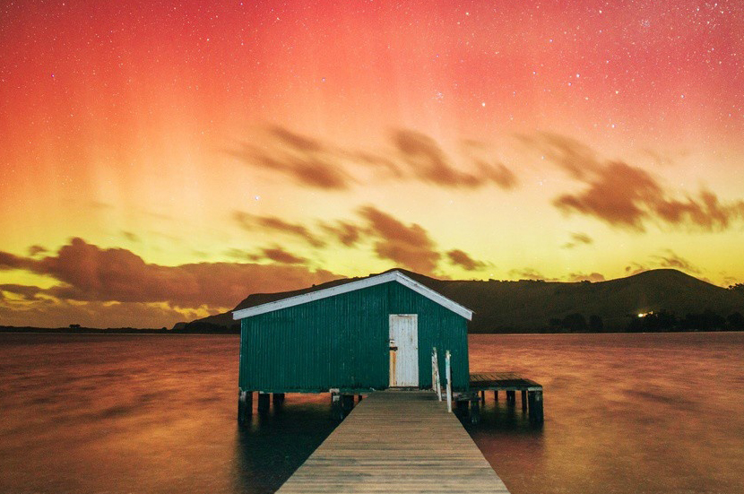

游记列表
按时间排序
-
在最好的时节遇见你，新西兰新西兰是一个任何人在任何时间去，都不会感到失望的地方。春生夏长，秋收冬藏，每个人都会衡量自己内心所向，选择最好的时节来到这片土地。绽放在高山湖畔的鲁冰花吸引着人们在春天造访。夏季的平原和海岸拥有全年最好的天气和最充足的阳光。从六月份来时，便宜的价格和世界级的雪场是滑雪爱好者的最爱。对我本人而言，最好的时节毫无疑问是秋天，为此我执意在四月出行，期望邂逅最色彩缤纷的中土世界。
-
在最好的时节遇见你，新西兰
念念不忘，必有回响，我的执拗也带来了回报。诚然，对于箭镇（Arrowtown）这个拥有“最美秋色”的地方来说，浓墨重彩的高潮乐章要到四月下旬才开始上演。的确，在我选择到访的时段，坎特伯雷（Canterbury）平原农庄中秀颀的杨树、奥塔哥（Otago）中部的葡萄园还没有变出绚丽的色彩。然而，在更广阔的天地，在麦肯锡盆地（Mackenzie Basin）的河滩、在金洛赫（Kinloch）的湖畔、在船长峡谷（Skipper Canyon）的高山、在克鲁萨河（Clutha River）边的树林，秋天已经可以用它闪闪发光的色彩让每个有幸亲近她的人目眩神迷。永远不要贪恋太多，这些已经足够。 -
在最好的时节遇见你，新西兰
而且上天似乎对我们格外优厚，在这趟旅行中安排了很多意外之喜。这是最好的时节，往年通常在四月下旬才举办的箭镇秋收节（Autumn Festival），今年竟提前到了4月10日开幕。在明媚的阳光下，在缤纷的花树中，人们喝着啤酒唱着歌、撸着烤串儿跳着舞，生活再也不能美好更多。适逢其会，幸之所至。